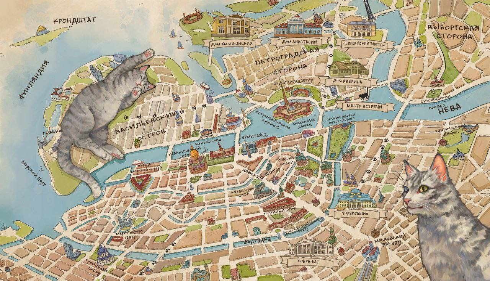

В конец
Колдун Российской империи
Идея
Серия книг о рассследованиях графа Аверина (офицальное название: "Колдун Российской империи") завоевала сумасшедшую популярность после выхода в 2023 году. За 2024-2025 год ее популярность только увеличилась. Книги серии были выпущены огромными тиражами, активно представлены во всевозможных книжных рейтингах, а также стали трендами в соответствующих соц сетях и т. д. Важно, что книги серии стали востребованы у самых разных групп российской читательской аудитории. Этот тезис подкрепляется во-первых популярностью книг у всех поколений (начиная от зумеров и далее), а также у читателей, отдающих основное препочтение разным жанра, а во-вторых осторожным принятием книги кругами, отдающими предпочтение условно элитарным и классическим произведение (ряд других усойчивых бестселлеров условно массовой литературы подобным похвастаться скорее не может). Кроме того, данная серия книг вызвала поток детективных серий и книг в имперском сеттинге в разных издательствах.
Такая ситуация сделала данную серию книг особенно ярким представителем современного книжного рынка (условно массовой литературы) и интересным обьектом для исследования в области современной гуманитарной науки.
Материалом для исследования будут три первые книги серии (на данный момент существует 5 книг).
В фокусе исследования будет применение цифровых методов гуманитарной науки для лучшего понимания, что из себя представляет серия книг "Колдун Российской империи".
Цель
Провести цифровой анализ серии книг "Граф Аверин" через изучение специфики и значимых акцентов серии, ее развития от книги к книге и ее образа в сопоставлении.
Немного информации по теме
- Статья в Т-журнале: "Расследования графа Аверина: в чем причина популярности детективов о колдуне Российской империи"(см. здесь)
- Результаты первого года продаж от издательства (2023) (см. здесь)
- Статья ТАСС (см. здесь)
План работы, задачи
- Провести токенизацию и лемматизацию текстов трех книг
- Выявить наиболее популярные слова в трех книгах, вывести результаты в виде облаков слов и диаграмм
- Вычислить индекс Флэша для трех книг
- Вычислить TTR для оценки лексического разнообразия книг
- Посмотреть слова-маркеры для каждой книги, изменение роли разных слов от книги к книге, вычислить TF-IDF для трех книг
- Провести сопоставление книги с книгами других авторов для выявления специфики книги в сравнении через методы стилометрии

В начало